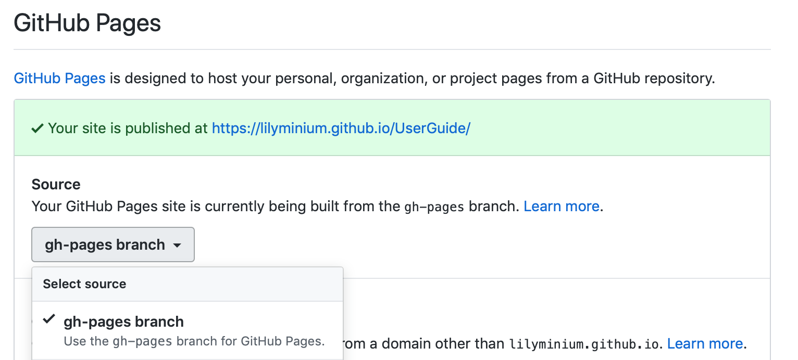

Contributing to the user guide
MDAnalysis maintains two kinds of documentation:
This user guide: a map of how MDAnalysis works, combined with tutorial-like overviews of specific topics (such as the analyses)
The documentation generated from the code itself. Largely built from code docstrings, these are meant to provide a clear explanation of the usage of individual classes and functions. They often include technical or historical information such as in which version the function was added, or deprecation notices.
This guide is about how to contribute to the user guide. If you are looking to add to documentation of the main code base, please see Working with the code documentation.
Overview
Many code examples in the docs are run during the doc build. This approach means that code examples will always be up to date, but it does make the doc building a bit more complex.
Here is an overview of the development workflow for the user guide, as expanded on throughout the rest of the page.
Fork the MDAnalysis repository from the mdanalysis account into your own account
Set up an isolated virtual environment for your documentation
Add your new documentation.
Forking and cloning the User Guide
Go to the MDAnalysis project page and hit the Fork button. You will want to clone your fork to your machine:
git clone https://github.com/your-user-name/UserGuide.git cd UserGuide git remote add upstream https://github.com/MDAnalysis/UserGuide
This creates the directory UserGuide and connects your repository to the upstream (main project) MDAnalysis repository.
Creating a development environment
Create a new virtual environment for the user guide. Install the required dependencies, and activate the nglview extension. We use nglview for visualizing molecules in Jupyter notebook tutorials.
Using conda or similar (miniconda, mamba, micromamba), create a new environment with all the dependencies:
cd UserGuide/ conda env create --file environment.yml --quiet conda activate mda-user-guide jupyter-nbextension enable nglview --py --sys-prefix
Adding new documentation
The documentation is built using Sphinx. The user guide is largely composed of four different kinds of files:
reStructuredText files (
.rst) which contain the text of the documentationJupyter notebooks (
.ipynb) which contain code examplesPython scripts (
.py) in thedoc/source/scripts/directory which are used for automatically generated documentationText files (
.txt) which contain the automatically generated documentation. These should not be edited directly as changes will not be included. These are largely tables and lists of topology attributes for readers, writers, and parsers.
What file to edit
In order to figure out which file you should be editing, the easiest
way is probably to ctrl+F or otherwise search through the repository
for the text you want to edit. Otherwise, you can look at the
index.rst file in the doc/source directory.
This file contains the home page of the user guide and the “overall”
tables of contents for the rest of the documentation.
For example, the
index.rst file might contain the following lines:
.. toctree:: :maxdepth: 1 :caption: Getting started :hidden: installation examples/quickstart faq examples/README
This tells Sphinx that the first three entries in the “Getting started” section of the documentation are:
installation.rst
examples/quickstart.ipynb
faq.rst
examples/README.rst
All internal links in the user guide are relative to the doc/source directory.
installation.rst, therefore, can be found at UserGuide/doc/source/installation.rst.
This is the file you should edit if you want to change the installation instructions.
Note that the examples/quickstart.ipynb entry is a Jupyter notebook.
We use the nbsphinx extension to convert Jupyter notebooks to HTML
during the doc build. All changes to the Quickstart guide should be made
to the Jupyter notebook itself, and changes will be reflected in the final
documentation.
reStructuredText files
These are the files that end in .rst and contain plain text.
reStructuredText is a markup language that is used to write
documentation for Sphinx in Python.
The reStructuredText Primer
is a good place to start if you are unfamiliar with the syntax.
The user guide also makes use of a number of Sphinx extensions to ensure that the code examples are always up-to-date.
One example is the ipython directive.
The ipython directive lets you put code in the documentation which will be run
during the doc build. For example:
.. ipython:: python x = 2 x**3
will be rendered as:
In [1]: x = 2 In [2]: x**3 Out[2]: 8
Jupyter notebook files
Jupyter notebooks are a great way to write documentation, since they allow you to write text and code in the same document. The user guide uses Jupyter notebooks for all the tutorials and examples.
Important
One of the neat things about nglview is the ability to interact with molecules via the viewer.
Many of our notebooks include cells that render MDAnalysis systems.
However, this creates very large files.
We ask that you avoid saving the state of the viewer in the notebooks.
We also ask in general that you leave NGLView cells commented out.
Everything in the doc/source/examples/ directory is a Jupyter notebook.
They are rendered in the user guide on the
“Examples” page, and
are also listed in the
“Analysis”
section of the user guide.
Jupyter notebooks should be edited and created using the User guide environment that you created in the previous section.
When you add a new Jupyter notebook, you should add it to the doc/source/examples/
directory and add a link to it in the doc/source/examples/README.rst file.
Further notes on testing Jupyter notebooks are included below.
Building the user guide
Navigate to the doc/ directory and run make html:
cd doc/ make html
The HTML output will be in doc/build/, which you can open in your browser of choice. The homepage is doc/build/index.html.
If rebuilding the documentation becomes tedious after a while, install the sphinx-autobuild extension.
Test with pytest and nbval
Whenever you add or modify notebook cells, you should make sure they run without errors and that their outputs are consistent, since they are part of the documentation as well.
We use a pytest plugin for this called nbval, it takes advantage of the saved notebook state and re-runs the notebook to determine if its output is still identical to the saved state. Thus, cells not only have to work (no errors), but also must give the same output they gave when they were saved.
To test all notebooks, just cd into UserGuide/tests and run pytest.
If you want to test a particular notebook, check the the contents of pytest.ini, this file
defines flags that you can also pass directly to pytest.
For example, if you wanted to test the hole2 notebook:
pytest --nbval --nbval-current-env --nbval-sanitize-with ./sanitize_output.cfg ../doc/source/examples/analysis/polymers_and_membranes/hole2.ipynb
Where --nbval tells pytest to use nbval to test Jupyter notebooks, --nbval-current-env
to use the currently loaded python environment (make sure you actually loaded your environment)
instead of trying to use the one that was used when the notebook was saved and
--nbval-sanitize-with to point pytest to a file full of replacement rules like this one
for example:
regex: (.*B \[0.*B/s\])
replace: DOWNLOAD
This tells pytest to scan the outputs of all cells and replace the matching string with the word DOWNLOAD. This is called sanitization.
Sanitization
Exactly matching cell outputs between runs is a high bar for testing and tends to give false errors
– otherwise correct cells may give different outputs each time they are run (e.g. cells with code
that outputs memory locations).
To alleviate this, before testing each cell pytest will match its output against the regular
expressions from sanitize_output.cfg. This file contains replacements for strings that we know will vary.
Pytest will replace the dynamic output with these constant strings, which won’t change between runs and hence prevent spurious failures.
If your code correctly outputs variable strings each time its run, you should add a replacement
rule to the sanitize_output.cfg file and try to make it as specific as possible.
On the hole2 notebook
The hole2 notebook is special in that it requires installation of extra software to run, namely the hole2 program. If you test all the notebooks you may therefore run into errors if hole2 is not installed. These errors can be generally ignored unless you do specifically want to test the hole2 notebook. Of course, you should take note of other errors that occur if hole2 is installed! To run the hole2 notebook you’ll have to install hole2 as described in its documentation. (For Linux, a conda-forge package is available, for other platforms you may have to compile it yourself.)
Adding changes to the UserGuide
As with the code, commit and push your code to GitHub. Then create a pull request. The only test run for the User Guide is that your file compile into HTML documents without errors. As usual, your PR will be reviewed and merged into the User Guide when it looks good.
If you have issues building your documentation locally, opening a pull request creates preview documentation on ReadTheDocs, which you can use to check renders. We believe it is best to open PRs early and often, so that we can catch issues early!
Optional steps and tips
The below sections are optional, but may be helpful for more advanced users.
Using pre-commit hooks
Manually editing files can often lead to small inconsistencies: a whitespace here, a missing carriage return there. A tool called pre-commit can be used to automatically fix these problems, before a git commit is made. To enable the pre-commit hooks, run the following:
pre-commit install
To perform the pre-commit checks on all the files, run the following:
pre-commit run --all-files
To remove the pre-commit hooks from your .git directory, run the following:
pre-commit uninstall
Automatically building documentation
Constantly rebuilding documentation can become tedious when you have many changes to make. Use sphinx-autobuild to rebuild documentation every time you make changes to any document, including Jupyter notebooks. Install sphinx-autobuild:
pip install sphinx-autobuild
Then, run the following command in the doc/ directory:
python -m sphinx_autobuild source build
This will start a local webserver at http://localhost:8000/, which will refresh every time you save changes to a file in the documentation. This is helpful for both the user guide (first navigate to UserGuide/doc) and the main repository documentation (navigate to package/doc/sphinx).
Advanced preview with gh-pages
Note
This section documents how to render documentation on a fork without ReadTheDocs. This is generally unnecessary and should only be done in cases where we believe ReadTheDocs is not rendering our documentation properly. For all other cases, please use the ReadTheDocs preview in pull requests.
It is often difficult to review Jupyter notebooks on GitHub, especially if you embed widgets and images.
If you make a pull request to the User Guide, we do make use of the ReviewNB for reviewing Jupyter notebooks.
Another way to make it easier on the developers who review your changes is to build the changes on your forked repository and link the relevant sections in your pull request.
To do this, create a gh-pages branch and merge your new branch into it.
# the first time
git checkout -b gh-pages
git merge origin/my-new-branch
Fix any merge conflicts that arise. Then edit UserGuide/doc/source/conf.py and change the URL of the site, which is set to site_url = "https://www.mdanalysis.org/UserGuide". Change it to your personal site, e.g.
site_url = "https://www.my_user_name.github.io/UserGuide"
Now you can build your pages with the make github macro in the UserGuide/doc/ directory, which builds the files and copies them to the top level of your directory.
make github
You should be able to open one of these new HTML files (e.g. UserGuide/index.html) in a browser and navigate your new documentation. Check that your changes look right. If they are, push to your gh-pages branch from the UserGuide/ directory.
git add .
git commit -m 'built my-new-branch'
git push -f origin gh-pages
On GitHub, navigate to your fork of the repository and go to Settings. In the GitHub Pages section, select the “gh-pages branch” from the Source dropdown. Check that your website is published at the given URL.
For each time you add changes to another branch later, just merge into gh-pages and rebuild.
git checkout gh-pages
git merge origin/my_branch
cd doc/
make github